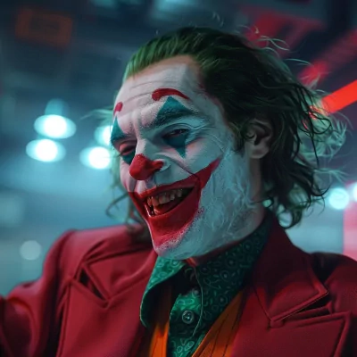

-
O Joker (no Brasil, também conhecido como Coringa) é um supervilão fictício que aparece nos livros de histórias em quadrinhos norte-americanos publicados pela editora estadunidense DC Comics. Foi criado por Jerry Robinson, Bill Finger e Bob Kane e apareceu pela primeira vez em Batman #1 (abril de 1940).